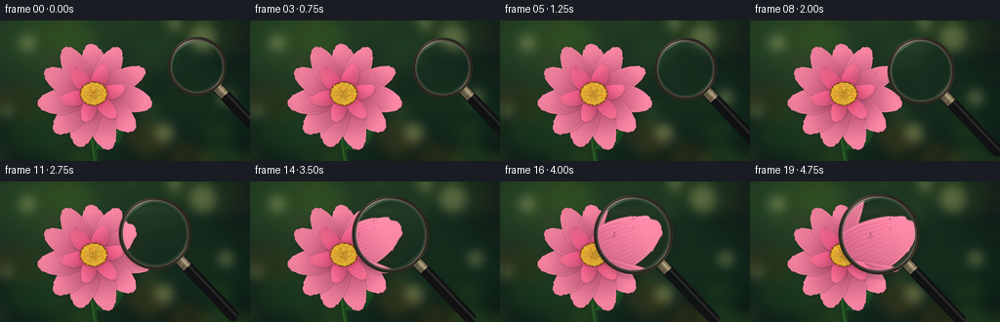
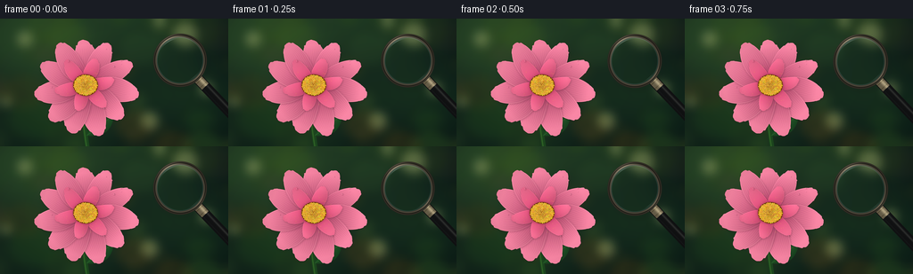

CODING AGENTS AS PIXEL WORLD MODELS
traex/GPT-6.1-Sol · phygen_070
点击播放 · 原生 RGB 像素
逐轮保存的候选
回放视频、检查图与代码变化。
每份候选均可单独播放。实际图片检查记录在下方工具轨迹中。
候选 01播放与检查图
点击播放 · 原生 RGB 像素


展开代码变化
--- 上一保存版本
+++ 本次保存版本
@@ -0,0 +1,263 @@
+"""Procedural macro flower and moving refractive magnifier, all authored from text."""
+from pathlib import Path
+import math
+import numpy as np
+from PIL import Image, ImageDraw, ImageFilter
+from artifact_io import save
+
+ROOT = Path(__file__).resolve().parent
+W,H,S = 256,144,4
+SW,SH=W*S,H*S
+rng=np.random.default_rng(70)
+y,x=np.mgrid[0:SH,0:SW].astype(np.float32)
+x=(x+.5)/S; y=(y+.5)/S
+
+def pil(a):
+ return Image.fromarray(np.uint8(np.clip(a,0,255)))
+def mix(a,c,m):
+ return a*(1-m[...,None])+np.asarray(c)*m[...,None]
+def blur_mask(a,r):
+ return np.asarray(Image.fromarray(np.uint8(np.clip(a*255,0,255))).filter(ImageFilter.GaussianBlur(r*S)),dtype=np.float32)/255
+
+def make_background():
+ light=np.exp(-((x-44)**2/(160**2)+(y-20)**2/(100**2)))
+ waves=np.sin(x*.027+y*.021)*np.cos(y*.038-x*.016)
+ b=np.zeros((SH,SW,3),np.float32)
+ b[:]=[13,31,25]
+ b+=light[...,None]*np.array([25,35,13])
+ b+=waves[...,None]*np.array([4,8,2])
+ im=pil(b)
+ d=ImageDraw.Draw(im,'RGBA')
+ # Out-of-focus foliage and soft sunlit circles.
+ for i in range(40):
+ cx,cy=rng.uniform(-30,286),rng.uniform(-30,174)
+ r=rng.uniform(5,28)
+ col=(int(rng.uniform(42,90)),int(rng.uniform(65,111)),int(rng.uniform(23,49)),int(rng.uniform(35,85)))
+ d.ellipse([(cx-r)*S,(cy-r*.8)*S,(cx+r)*S,(cy+r*.8)*S],fill=col)
+ for cx,cy,r in [(28,23,9),(208,18,14),(231,79,8),(168,115,10),(7,94,5),(179,4,6)]:
+ d.ellipse([(cx-r)*S,(cy-r)*S,(cx+r)*S,(cy+r)*S],fill=(206,210,136,70))
+ d.ellipse([(cx-r*.8)*S,(cy-r*.8)*S,(cx+r*.8)*S,(cy+r*.8)*S],fill=(166,185,109,36))
+ im=im.filter(ImageFilter.GaussianBlur(5*S))
+ bg=np.array(im,dtype=np.float32)
+ # Curving, softly cylindrical flower stem.
+ sx=92+7*((y-75)/75)**2
+ dist=np.abs(x-sx)
+ a=np.clip((2.6-dist)*S,0,1)*np.clip((y-78)*S,0,1)
+ stem=np.zeros_like(bg); stem[:]=[29,72,31]
+ stem+=np.exp(-((x-(sx-.8))/.65)**2)[...,None]*np.array([25,36,11])
+ bg=mix(bg,stem,a)
+ # Lanceolate leaves with a raised central vein.
+ for cx,cy,ang,L,B in [(91,116,3.67,37,9),(97,132,5.64,39,10)]:
+ co,si=np.cos(ang),np.sin(ang)
+ u=(x-cx)*co+(y-cy)*si
+ v=-(x-cx)*si+(y-cy)*co
+ t=np.clip(u/L,0,1)
+ width=B*np.sin(np.pi*t)**.85
+ alpha=np.clip((width-abs(v))*S,0,1)*(u>=0)*(u<L)
+ leaf=np.zeros_like(bg);leaf[:]=[23,64,31]
+ leaf+=((1-np.abs(v)/(width+.1))*18)[...,None]*np.array([.5,1,.35])
+ vein=np.exp(-(v/.28)**2)
+ leaf+=vein[...,None]*[16,24,7]
+ branches=np.exp(-((np.mod(u*.24+np.abs(v)*.35,1)-.5)/.055)**2)*.10
+ leaf+=branches[...,None]*[15,25,8]
+ bg=mix(bg,leaf,alpha)
+ return bg
+
+cx,cy=96,75
+
+def make_flower(bg):
+ flower_mask=np.zeros((SH,SW),np.float32)
+ # Asymmetric tiers; each individual petal has its own cup, tilt and rib pattern.
+ petals=[]
+ for i in range(11):
+ ang=-np.pi/2+i*2*np.pi/11+rng.uniform(-.055,.055)
+ petals.append((ang,rng.uniform(51,62),rng.uniform(11.5,15.3),rng.uniform(-2,2),i,False))
+ # A few small overlapping central petals, not a perfectly repetitive rosette.
+ for i in range(6):
+ ang=-1.23+i*2*np.pi/6
+ petals.append((ang,rng.uniform(29,37),rng.uniform(7,10),rng.uniform(-1.5,1.5),i+11,True))
+ # Put petals behind one another in a natural clockwise overlap.
+ for ang,L,B,bend,idx,inner in petals:
+ co,si=np.cos(ang),np.sin(ang)
+ u=(x-cx)*co+(y-cy)*si
+ v0=-(x-cx)*si+(y-cy)*co
+ t=np.clip((u-3)/(L-3),0,1)
+ v=v0-bend*np.sin(np.pi*t)-1.1*np.sin(t*4+idx)*t
+ # Broad rounded ends with very shallow natural scallops.
+ profile=np.sin(np.pi*(t**.86))**.49
+ width=B*profile*(.87+.18*t)
+ q=v/(width+.0001)
+ edge=width-abs(v)
+ tip_scallop=.45*(np.cos(v*1.3+idx)+.5*np.cos(v*2.1))*(t>.85)
+ alpha=np.clip((edge+tip_scallop)*S+.5,0,1)*(u>3)*(u<L)
+ if not np.any(alpha): continue
+ # Small, soft shadows between overlapping petals.
+ sh=blur_mask(alpha,1.0)
+ sh=np.roll(np.roll(sh,3,axis=0),2,axis=1)*.22
+ bg=mix(bg,[47,11,27],sh)
+ base=np.array([117,24,61]) if not inner else np.array([170,31,80])
+ tip=np.array([249,134,164]) if not inner else np.array([247,111,148])
+ f=np.clip(.18+t*.95,0,1)**.70
+ col=base[None,None,:]*(1-f[...,None])+tip[None,None,:]*f[...,None]
+ # Cupped petal surface and directional daylight illumination.
+ height=2.8*np.sin(np.pi*t)*(.45+.55*q*q)+.7*np.sin(2*np.pi*t+idx)
+ gy,gx=np.gradient(height,1/S,1/S)
+ lit=np.clip((1+.19*(-gx-.7*gy))/np.sqrt(1+.24*(gx*gx+gy*gy)),.55,1.20)
+ lit=np.where(alpha>0,lit,1)
+ col*=lit[...,None]
+ # Primary veins fan from the base, alongside smaller capillaries.
+ vv=q + .026*np.sin(t*12+idx)+.012*np.sin(t*31+q*6)
+ ribs=np.cos(vv*np.pi*13 +.36*np.sin(t*11+idx))
+ vein=np.exp(-((np.sin(vv*np.pi*7))/.18)**2)
+ fine=np.cos(vv*np.pi*33+t*6)
+ col+=ribs[...,None]*np.array([5.8,4.9,3.2])
+ col-=vein[...,None]*np.array([8,10,7])*(.25+.75*t[...,None])
+ col+=fine[...,None]*np.array([1.7,1.8,1.4])
+ # Long irregular pale vein channels are especially apparent through the lens.
+ cells=np.sin(u*3.8+np.sin(v*2.3))*np.cos(v*5.6+np.sin(u*.8))
+ grain=rng.normal(0,.65,(SH,SW))
+ col+=(cells*1.3+grain)[...,None]
+ margin=np.exp(-((abs(q)-.94)/.035)**2)
+ col+=margin[...,None]*np.array([9,13,10])
+ # Reddish basal streaks.
+ streak=np.exp(-(t/.25)**2)*(.5+.5*np.cos(q*22))
+ col-=streak[...,None]*np.array([11,15,8])
+ bg=mix(bg,np.clip(col,0,255),alpha)
+ flower_mask=np.maximum(flower_mask,alpha)
+ # Center disk: dark amber foundation with hundreds of 3D pollen-bearing florets.
+ rr=np.sqrt(((x-cx)/1.05)**2+((y-cy)/.91)**2)
+ a=np.clip((13.4-rr)*S+.5,0,1)
+ shadow=blur_mask(a,1.5)*.38
+ bg=mix(bg,[64,29,24],shadow)
+ disk=np.zeros_like(bg);disk[:]=[116,62,16]
+ disk+=(np.clip(1-rr/14,0,1)*24)[...,None]*[1,1,.25]
+ bg=mix(bg,disk,a)
+ # Golden spiral of individual pollen filaments with shaded stems and bright heads.
+ im=pil(bg);d=ImageDraw.Draw(im,'RGBA')
+ points=[]
+ for i in range(290):
+ r=12.5*np.sqrt((i+.6)/290)
+ theta=i*2.39996323
+ px=cx+1.05*r*np.cos(theta);py=cy+.91*r*np.sin(theta)
+ points.append((py,px,r))
+ for py,px,r in sorted(points):
+ size=.36+.28*r/12.5+rng.uniform(0,.12)
+ d.line((px*S,(py+.8)*S,(px-.25)*S,(py-.45)*S),fill=(168,90,15,255),width=2)
+ d.ellipse(((px-size)*S,(py-size*.83)*S,(px+size)*S,(py+size*.83)*S),fill=(int(rng.uniform(206,250)),int(rng.uniform(143,199)),int(rng.uniform(22,62)),255))
+ d.ellipse(((px-size*.68)*S,(py-size*.65)*S,(px+.07)*S,(py+.02)*S),fill=(255,218,103,225))
+ bg=np.array(im,dtype=np.float32)
+ # Fine pollen specks near the flower heart.
+ for i in range(65):
+ theta=rng.uniform(0,2*np.pi);r=rng.uniform(13.5,23)
+ px=cx+r*np.cos(theta);py=cy+r*np.sin(theta)
+ ix,iy=int(px*S),int(py*S)
+ if 0<=ix<SW and 0<=iy<SH and flower_mask[iy,ix]>.9:
+ rad=rng.uniform(.12,.29)
+ a=np.clip((rad-np.hypot(x-px,y-py))*S+.4,0,1)
+ bg=mix(bg,[241,189,70],a*.85)
+ # Dew drops: transparent pink refracted interior, rim, tiny specular glint.
+ droplets=[(125,41,1.45),(136,47,.88),(128,54,1.10),(143,66,1.55),(119,34,.63),(77,48,1.28),(58,77,.82),(117,101,1.2),(136,51,.40),(126,44,.45)]
+ for px,py,r in droplets:
+ if flower_mask[int(py*S),int(px*S)]<.8: continue
+ dx=(x-px)/r;dy=(y-py)/(r*.82)
+ dr=np.hypot(dx,dy)
+ sh=np.exp(-((x-px-.5)**2+(y-py-.6)**2)/(r*r))*.20
+ bg=mix(bg,[102,29,53],sh*flower_mask)
+ a=np.clip((1-dr)*S*r,0,1)
+ rim=np.exp(-((dr-.88)/.10)**2)
+ refr=1+.12*(-dx+dy)
+ drop=bg*refr[...,None]+np.maximum(0,1-dr)[...,None]*[7,5,7]
+ drop-=rim[...,None]*np.array([26,22,20])
+ shine=np.exp(-((dx+.33)**2+(dy+.4)**2)/.037)
+ drop=mix(drop,[255,246,240],shine*.93)
+ lower=np.exp(-((dx-.22)**2+(dy-.59)**2)/.065)*.35
+ drop=mix(drop,[254,182,197],lower)
+ bg=mix(bg,drop,a)
+ return np.clip(bg,0,255)
+
+scene=make_flower(make_background())
+
+def sample_scene(xx,yy):
+ xx=np.clip(xx*S-.5,0,SW-1.001);yy=np.clip(yy*S-.5,0,SH-1.001)
+ ix=xx.astype(np.int32);iy=yy.astype(np.int32)
+ fx=(xx-ix)[...,None];fy=(yy-iy)[...,None]
+ return ((1-fy)*((1-fx)*scene[iy,ix]+fx*scene[iy,ix+1])+fy*((1-fx)*scene[iy+1,ix]+fx*scene[iy+1,ix+1]))
+
+def render_frame(i):
+ t=i/19
+ e=t*t*(3-2*t)
+ # One continuous motion toward the right-hand petals, with a gentle settling finish.
+ lx=202-70*e;ly=47+7*e+2*np.sin(np.pi*t)
+ r=29.5+11.3*e
+ mag=1.04+1.54*e
+ out=scene.copy()
+ # Subtle diffused shadow cast by the suspended frame.
+ dist=np.hypot(x-lx-2.0,y-ly-3.4)
+ shadow=np.exp(-((dist-r)/3.0)**2)*(.08+.08*e)
+ out=mix(out,[28,20,22],shadow)
+ # Ebony handle extends southeast, behind the circular lens and its retaining collar.
+ ax,ay=lx+r*.68,ly+r*.71
+ bx,by=ax+55,ay+58
+ vx,vy=bx-ax,by-ay
+ length=np.hypot(vx,vy);ux,uy=vx/length,vy/length
+ uu=(x-ax)*ux+(y-ay)*uy
+ vv=-(x-ax)*uy+(y-ay)*ux
+ along=np.clip(uu,0,length)
+ hd=np.hypot(uu-along,vv)
+ handle_a=np.clip((6.0-hd)*S+.5,0,1)
+ material=np.zeros_like(out);material[:]=[17,18,19]
+ gloss=np.exp(-((vv+2.3)/1.1)**2)
+ material+=gloss[...,None]*[30,30,28]
+ material+=np.exp(-((vv-3.6)/.4)**2)[...,None]*[6,7,7]
+ fine=(np.sin(uu*4)*np.cos(vv*6))*.7
+ material+=fine[...,None]
+ out=mix(out,material,handle_a)
+ # Metal ferrule connecting handle to the rim.
+ ferrule=(uu>-1)*(uu<12)*np.clip((5.2-np.abs(vv))*S+.5,0,1)
+ fshine=.30+.70*np.exp(-((vv+1.7)/2)**2)
+ collar=np.zeros_like(out);collar[:]=[70,63,47]
+ collar+=fshine[...,None]*[113,105,86]
+ collar-=((np.exp(-((uu-3)/.45)**2)+np.exp(-((uu-9)/.40)**2))*25)[...,None]
+ out=mix(out,collar,ferrule)
+ # Ray-map of a weakly convex lens. Pixel geometry expands continuously as it nears petals.
+ dx=x-lx;dy=y-ly
+ rho=np.hypot(dx,dy)
+ normalized=np.clip(rho/(r-3),0,1)
+ factor=(1+.11*normalized**4)/mag
+ # Lens is centered over the actual underlying flower; no disconnected insert.
+ refracted=sample_scene(lx+dx*factor,ly+dy*factor)
+ refracted=refracted*1.025+[.2,.55,.75]
+ # Almost invisible reflections preserve the revealed floral detail.
+ ghost=np.exp(-((dx+11)/22)**2-((dy+24)/4.0)**2)*.035
+ refracted=mix(refracted,[206,225,231],ghost)
+ edge_glow=np.exp(-((normalized-.97)/.020)**2)
+ refracted=mix(refracted,[133,169,173],edge_glow*.17)
+ lensmask=np.clip(((r-2.6)-rho)*S+.5,0,1)
+ out=mix(out,refracted,lensmask)
+ # Round brass/gunmetal retaining ring with polished anisotropic highlights.
+ theta=np.arctan2(dy,dx)
+ aa=np.clip((r+.65-rho)*S+.5,0,1)*np.clip((rho-(r-3.5))*S+.5,0,1)
+ band=(rho-(r-3.5))/4.15
+ angular=.22+.55*np.maximum(0,np.cos(theta+2.1))**8+.28*np.maximum(0,np.cos(theta-.65))**16
+ radial=.15+.70*np.exp(-((band-.30)/.12)**2)+.24*np.exp(-((band-.76)/.1)**2)
+ steel=np.zeros_like(out);steel[:]=[35,32,26]
+ steel+=(angular*radial)[...,None]*[208,195,161]
+ steel+=np.exp(-((band-.25)/.07)**2)[...,None]*[24,22,17]
+ steel-=np.exp(-((band-.59)/.07)**2)[...,None]*[18,17,15]
+ out=mix(out,np.clip(steel,0,255),aa)
+ # Thin silver line at the inner edge and limited highlights along the curved glass.
+ hair=np.exp(-((rho-(r-3.3))/.17)**2)*(.25+.5*np.maximum(0,np.cos(theta+2)))
+ out=mix(out,[198,205,194],hair)
+ arc=np.exp(-((rho-(r-4.7))/.24)**2)*np.exp(-((theta+2.13)/.30)**2)*.52
+ out=mix(out,[230,242,237],arc)
+ arc2=np.exp(-((rho-(r-5.1))/.19)**2)*np.exp(-((theta-.85)/.23)**2)*.24
+ out=mix(out,[213,231,224],arc2)
+ # Gentle photographic corner falloff, not a graphic overlay.
+ vignette=np.clip(1-.105*((x-124)/166)**2-.08*((y-63)/107)**2,.8,1)
+ out*=vignette[...,None]
+ return np.asarray(pil(out).resize((W,H),Image.Resampling.LANCZOS),dtype=np.uint8)
+
+if __name__=='__main__':
+ frames=np.stack([render_frame(i) for i in range(20)])
+ save(frames,ROOT)
+ print('Saved',frames.shape,frames.dtype,'range',frames.min(),frames.max())
可观测工具轨迹
实际执行的命令与返回图片。
命令 1exit 0
/bin/bash -lc 'ls -la && cat prompt.txt && cat GENERATION_RULES.md && cat task_spec.json'
命令 2exit 0
/bin/bash -lc "cat artifact_io.py && python - <<'PY'
import PIL,numpy
print('Pillow',PIL.__version__)
PY"命令 3exit 0
/bin/bash -lc "cat > generate.py <<'PY'
\"\"\"Procedural macro flower and moving refractive magnifier, all authored from text.\"\"\"
from pathlib import Path
import math
import numpy as np
from PIL import Image, ImageDraw, ImageFilter
from artifact_io import save
ROOT = Path(__file__).resolve().parent
W,H,S = 256,144,4
SW,SH=W*S,H*S
rng=np.random.default_rng(70)
y,x=np.mgrid[0:SH,0:SW].astype(np.float32)
x=(x+.5)/S; y=(y+.5)/S
def pil(a):
return Image.fromarray(np.uint8(np.clip(a,0,255)))
def mix(a,c,m):
return a*(1-m[...,None])+np.asarray(c)*m[...,None]
def blur_mask(a,r):
return np.asarray(Image.fromarray(np.uint8(np.clip(a*255,0,255))).filter(ImageFilter.GaussianBlur(r*S)),dtype=np.float32)/255
def make_background():
light=np.exp(-((x-44)**2/(160**2)+(y-20)**2/(100**2)))
waves=np.sin(x*.027+y*.021)*np.cos(y*.038-x*.016)
b=np.zeros((SH,SW,3),np.float32)
b[:]=[13,31,25]
b+=light[...,None]*np.array([25,35,13])
b+=waves[...,None]*np.array([4,8,2])
im=pil(b)
d=ImageDraw.Draw(im,'RGBA')
# Out-of-focus foliage and soft sunlit circles.
for i in range(40):
cx,cy=rng.uniform(-30,286),rng.uniform(-30,174)
r=rng.uniform(5,28)
col=(int(rng.uniform(42,90)),int(rng.uniform(65,111)),int(rng.uniform(23,49)),int(rng.uniform(35,85)))
d.ellipse([(cx-r)*S,(cy-r*.8)*S,(cx+r)*S,(cy+r*.8)*S],fill=col)
for cx,cy,r in [(28,23,9),(208,18,14),(231,79,8),(168,115,10),(7,94,5),(179,4,6)]:
d.ellipse([(cx-r)*S,(cy-r)*S,(cx+r)*S,(cy+r)*S],fill=(206,210,136,70))
d.ellipse([(cx-r*.8)*S,(cy-r*.8)*S,(cx+r*.8)*S,(cy+r*.8)*S],fill=(166,185,109,36))
im=im.filter(ImageFilter.GaussianBlur(5*S))
bg=np.array(im,dtype=np.float32)
# Curving, softly cylindrical flower stem.
sx=92+7*((y-75)/75)**2
dist=np.abs(x-sx)
a=np.clip((2.6-dist)*S,0,1)*np.clip((y-78)*S,0,1)
stem=np.zeros_like(bg); stem[:]=[29,72,31]
stem+=np.exp(-((x-(sx-.8))/.65)**2)[...,None]*np.array([25,36,11])
bg=mix(bg,stem,a)
# Lanceolate leaves with a raised central vein.
for cx,cy,ang,L,B in [(91,116,3.67,37,9),(97,132,5.64,39,10)]:
co,si=np.cos(ang),np.sin(ang)
u=(x-cx)*co+(y-cy)*si
v=-(x-cx)*si+(y-cy)*co
t=np.clip(u/L,0,1)
width=B*np.sin(np.pi*t)**.85
alpha=np.clip((width-abs(v))*S,0,1)*(u>=0)*(u<L)
leaf=np.zeros_like(bg);leaf[:]=[23,64,31]
leaf+=((1-np.abs(v)/(width+.1))*18)[...,None]*np.array([.5,1,.35])
vein=np.exp(-(v/.28)**2)
leaf+=vein[...,None]*[16,24,7]
branches=np.exp(-((np.mod(u*.24+np.abs(v)*.35,1)-.5)/.055)**2)*.10
leaf+=branches[...,None]*[15,25,8]
bg=mix(bg,leaf,alpha)
return bg
cx,cy=96,75
def make_flower(bg):
flower_mask=np.zeros((SH,SW),np.float32)
# Asymmetric tiers; each individual petal has its own cup, tilt and rib pattern.
petals=[]
for i in range(11):
ang=-np.pi/2+i*2*np.pi/11+rng.uniform(-.055,.055)
petals.append((ang,rng.uniform(51,62),rng.uniform(11.5,15.3),rng.uniform(-2,2),i,False))
# A few small overlapping central petals, not a perfectly repetitive rosette.
for i in range(6):
ang=-1.23+i*2*np.pi/6
petals.append((ang,rng.uniform(29,37),rng.uniform(7,10),rng.uniform(-1.5,1.5),i+11,True))
# Put petals behind one another in a natural clockwise overlap.
for ang,L,B,bend,idx,inner in petals:
co,si=np.cos(ang),np.sin(ang)
u=(x-cx)*co+(y-cy)*si
v0=-(x-cx)*si+(y-cy)*co
t=np.clip((u-3)/(L-3),0,1)
v=v0-bend*np.sin(np.pi*t)-1.1*np.sin(t*4+idx)*t
# Broad rounded ends with very shallow natural scallops.
profile=np.sin(np.pi*(t**.86))**.49
width=B*profile*(.87+.18*t)
q=v/(width+.0001)
edge=width-abs(v)
tip_scallop=.45*(np.cos(v*1.3+idx)+.5*np.cos(v*2.1))*(t>.85)
alpha=np.clip((edge+tip_scallop)*S+.5,0,1)*(u>3)*(u<L)
if not np.any(alpha): continue
# Small, soft shadows between overlapping petals.
sh=blur_mask(alpha,1.0)
sh=np.roll(np.roll(sh,3,axis=0),2,axis=1)*.22
bg=mix(bg,[47,11,27],sh)
base=np.array([117,24,61]) if not inner else np.array([170,31,80])
tip=np.array([249,134,164]) if not inner else np.array([247,111,148])
f=np.clip(.18+t*.95,0,1)**.70
col=base[None,None,:]*(1-f[...,None])+tip[None,None,:]*f[...,None]
# Cupped petal surface and directional daylight illumination.
height=2.8*np.sin(np.pi*t)*(.45+.55*q*q)+.7*np.sin(2*np.pi*t+idx)
gy,gx=np.gradient(height,1/S,1/S)
lit=np.clip((1+.19*(-gx-.7*gy))/np.sqrt(1+.24*(gx*gx+gy*gy)),.55,1.20)
lit=np.where(alpha>0,lit,1)
col*=lit[...,None]
# Primary veins fan from the base, alongside smaller capillaries.
vv=q + .026*np.sin(t*12+idx)+.012*np.sin(t*31+q*6)
ribs=np.cos(vv*np.pi*13 +.36*np.sin(t*11+idx))
vein=np.exp(-((np.sin(vv*np.pi*7))/.18)**2)
fine=np.cos(vv*np.pi*33+t*6)
col+=ribs[...,None]*np.array([5.8,4.9,3.2])
col-=vein[...,None]*np.array([8,10,7])*(.25+.75*t[...,None])
col+=fine[...,None]*np.array([1.7,1.8,1.4])
# Long irregular pale vein channels are especially apparent through the lens.
cells=np.sin(u*3.8+np.sin(v*2.3))*np.cos(v*5.6+np.sin(u*.8))
grain=rng.normal(0,.65,(SH,SW))
col+=(cells*1.3+grain)[...,None]
margin=np.exp(-((abs(q)-.94)/.035)**2)
col+=margin[...,None]*np.array([9,13,10])
# Reddish basal streaks.
streak=np.exp(-(t/.25)**2)*(.5+.5*np.cos(q*22))
col-=streak[...,None]*np.array([11,15,8])
bg=mix(bg,np.clip(col,0,255),alpha)
flower_mask=np.maximum(flower_mask,alpha)
# Center disk: dark amber foundation with hundreds of 3D pollen-bearing florets.
rr=np.sqrt(((x-cx)/1.05)**2+((y-cy)/.91)**2)
a=np.clip((13.4-rr)*S+.5,0,1)
shadow=blur_mask(a,1.5)*.38
bg=mix(bg,[64,29,24],shadow)
disk=np.zeros_like(bg);disk[:]=[116,62,16]
disk+=(np.clip(1-rr/14,0,1)*24)[...,None]*[1,1,.25]
bg=mix(bg,disk,a)
# Golden spiral of individual pollen filaments with shaded stems and bright heads.
im=pil(bg);d=ImageDraw.Draw(im,'RGBA')
points=[]
for i in range(290):
r=12.5*np.sqrt((i+.6)/290)
theta=i*2.39996323
px=cx+1.05*r*np.cos(theta);py=cy+.91*r*np.sin(theta)
points.append((py,px,r))
for py,px,r in sorted(points):
size=.36+.28*r/12.5+rng.uniform(0,.12)
d.line((px*S,(py+.8)*S,(px-.25)*S,(py-.45)*S),fill=(168,90,15,255),width=2)
d.ellipse(((px-size)*S,(py-size*.83)*S,(px+size)*S,(py+size*.83)*S),fill=(int(rng.uniform(206,250)),int(rng.uniform(143,199)),int(rng.uniform(22,62)),255))
d.ellipse(((px-size*.68)*S,(py-size*.65)*S,(px+.07)*S,(py+.02)*S),fill=(255,218,103,225))
bg=np.array(im,dtype=np.float32)
# Fine pollen specks near the flower heart.
for i in range(65):
theta=rng.uniform(0,2*np.pi);r=rng.uniform(13.5,23)
px=cx+r*np.cos(theta);py=cy+r*np.sin(theta)
ix,iy=int(px*S),int(py*S)
if 0<=ix<SW and 0<=iy<SH and flower_mask[iy,ix]>.9:
rad=rng.uniform(.12,.29)
a=np.clip((rad-np.hypot(x-px,y-py))*S+.4,0,1)
bg=mix(bg,[241,189,70],a*.85)
# Dew drops: transparent pink refracted interior, rim, tiny specular glint.
droplets=[(125,41,1.45),(136,47,.88),(128,54,1.10),(143,66,1.55),(119,34,.63),(77,48,1.28),(58,77,.82),(117,101,1.2),(136,51,.40),(126,44,.45)]
for px,py,r in droplets:
if flower_mask[int(py*S),int(px*S)]<.8: continue
dx=(x-px)/r;dy=(y-py)/(r*.82)
dr=np.hypot(dx,dy)
sh=np.exp(-((x-px-.5)**2+(y-py-.6)**2)/(r*r))*.20
bg=mix(bg,[102,29,53],sh*flower_mask)
a=np.clip((1-dr)*S*r,0,1)
rim=np.exp(-((dr-.88)/.10)**2)
refr=1+.12*(-dx+dy)
drop=bg*refr[...,None]+np.maximum(0,1-dr)[...,None]*[7,5,7]
drop-=rim[...,None]*np.array([26,22,20])
shine=np.exp(-((dx+.33)**2+(dy+.4)**2)/.037)
drop=mix(drop,[255,246,240],shine*.93)
lower=np.exp(-((dx-.22)**2+(dy-.59)**2)/.065)*.35
drop=mix(drop,[254,182,197],lower)
bg=mix(bg,drop,a)
return np.clip(bg,0,255)
scene=make_flower(make_background())
def sample_scene(xx,yy):
xx=np.clip(xx*S-.5,0,SW-1.001);yy=np.clip(yy*S-.5,0,SH-1.001)
ix=xx.astype(np.int32);iy=yy.astype(np.int32)
fx=(xx-ix)[...,None];fy=(yy-iy)[...,None]
return ((1-fy)*((1-fx)*scene[iy,ix]+fx*scene[iy,ix+1])+fy*((1-fx)*scene[iy+1,ix]+fx*scene[iy+1,ix+1]))
def render_frame(i):
t=i/19
e=t*t*(3-2*t)
# One continuous motion toward the right-hand petals, with a gentle settling finish.
lx=202-70*e;ly=47+7*e+2*np.sin(np.pi*t)
r=29.5+11.3*e
mag=1.04+1.54*e
out=scene.copy()
# Subtle diffused shadow cast by the suspended frame.
dist=np.hypot(x-lx-2.0,y-ly-3.4)
shadow=np.exp(-((dist-r)/3.0)**2)*(.08+.08*e)
out=mix(out,[28,20,22],shadow)
# Ebony handle extends southeast, behind the circular lens and its retaining collar.
ax,ay=lx+r*.68,ly+r*.71
bx,by=ax+55,ay+58
vx,vy=bx-ax,by-ay
length=np.hypot(vx,vy);ux,uy=vx/length,vy/length
uu=(x-ax)*ux+(y-ay)*uy
vv=-(x-ax)*uy+(y-ay)*ux
along=np.clip(uu,0,length)
hd=np.hypot(uu-along,vv)
handle_a=np.clip((6.0-hd)*S+.5,0,1)
material=np.zeros_like(out);material[:]=[17,18,19]
gloss=np.exp(-((vv+2.3)/1.1)**2)
material+=gloss[...,None]*[30,30,28]
material+=np.exp(-((vv-3.6)/.4)**2)[...,None]*[6,7,7]
fine=(np.sin(uu*4)*np.cos(vv*6))*.7
material+=fine[...,None]
out=mix(out,material,handle_a)
# Metal ferrule connecting handle to the rim.
ferrule=(uu>-1)*(uu<12)*np.clip((5.2-np.abs(vv))*S+.5,0,1)
fshine=.30+.70*np.exp(-((vv+1.7)/2)**2)
collar=np.zeros_like(out);collar[:]=[70,63,47]
collar+=fshine[...,None]*[113,105,86]
collar-=((np.exp(-((uu-3)/.45)**2)+np.exp(-((uu-9)/.40)**2))*25)[...,None]
out=mix(out,collar,ferrule)
# Ray-map of a weakly convex lens. Pixel geometry expands continuously as it nears petals.
dx=x-lx;dy=y-ly
rho=np.hypot(dx,dy)
normalized=np.clip(rho/(r-3),0,1)
factor=(1+.11*normalized**4)/mag
# Lens is centered over the actual underlying flower; no disconnected insert.
refracted=sample_scene(lx+dx*factor,ly+dy*factor)
refracted=refracted*1.025+[.2,.55,.75]
# Almost invisible reflections preserve the revealed floral detail.
ghost=np.exp(-((dx+11)/22)**2-((dy+24)/4.0)**2)*.035
refracted=mix(refracted,[206,225,231],ghost)
edge_glow=np.exp(-((normalized-.97)/.020)**2)
refracted=mix(refracted,[133,169,173],edge_glow*.17)
lensmask=np.clip(((r-2.6)-rho)*S+.5,0,1)
out=mix(out,refracted,lensmask)
# Round brass/gunmetal retaining ring with polished anisotropic highlights.
theta=np.arctan2(dy,dx)
aa=np.clip((r+.65-rho)*S+.5,0,1)*np.clip((rho-(r-3.5))*S+.5,0,1)
band=(rho-(r-3.5))/4.15
angular=.22+.55*np.maximum(0,np.cos(theta+2.1))**8+.28*np.maximum(0,np.cos(theta-.65))**16
radial=.15+.70*np.exp(-((band-.30)/.12)**2)+.24*np.exp(-((band-.76)/.1)**2)
steel=np.zeros_like(out);steel[:]=[35,32,26]
steel+=(angular*radial)[...,None]*[208,195,161]
steel+=np.exp(-((band-.25)/.07)**2)[...,None]*[24,22,17]
steel-=np.exp(-((band-.59)/.07)**2)[...,None]*[18,17,15]
out=mix(out,np.clip(steel,0,255),aa)
# Thin silver line at the inner edge and limited highlights along the curved glass.
hair=np.exp(-((rho-(r-3.3))/.17)**2)*(.25+.5*np.maximum(0,np.cos(theta+2)))
out=mix(out,[198,205,194],hair)
arc=np.exp(-((rho-(r-4.7))/.24)**2)*np.exp(-((theta+2.13)/.30)**2)*.52
out=mix(out,[230,242,237],arc)
arc2=np.exp(-((rho-(r-5.1))/.19)**2)*np.exp(-((theta-.85)/.23)**2)*.24
out=mix(out,[213,231,224],arc2)
# Gentle photographic corner falloff, not a graphic overlay.
vignette=np.clip(1-.105*((x-124)/166)**2-.08*((y-63)/107)**2,.8,1)
out*=vignette[...,None]
return np.asarray(pil(out).resize((W,H),Image.Resampling.LANCZOS),dtype=np.uint8)
if __name__=='__main__':
frames=np.stack([render_frame(i) for i in range(20)])
save(frames,ROOT)
print('Saved',frames.shape,frames.dtype,'range',frames.min(),frames.max())
PY
python generate.py"命令 4exit 1
/bin/bash -lc "python - <<'PY'
from pathlib import Path
import numpy as np
p=Path('.')
a=np.load('pixels.npz')['pixels']
print('Stored RGB-packed tensor:',a.shape,a.dtype)
print('PNG frame count:',len(list((p/'frames').glob('*.png'))))
print('Required artifacts:', {name:(p/name).is_file() for name in ['generate.py','pixels.npz','index.html','inspection.png','transition_check.png']})
PY
command -v ffmpeg"保存候选 1 份；完成命令 4 次；可验证图片返回 0 张。原始 API 响应与完整日志保留在本地。